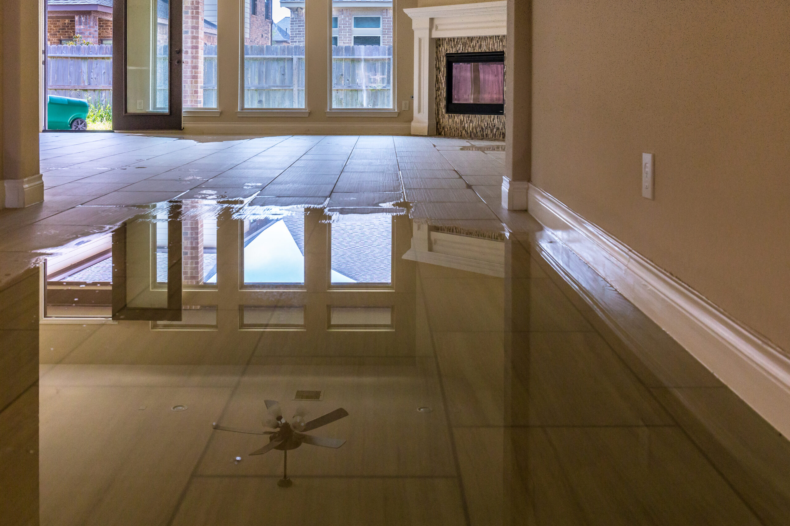

We provide rapid response water damage restoration services that help homeowners stop damage quickly, dry affected areas properly, and restore their property safely after unexpected flooding or leaks.
Discovering water damage in your home can be overwhelming. Whether it’s a burst pipe, storm flooding, or an appliance leak, water spreads quickly and begins damaging materials almost immediately. Flooring absorbs moisture, drywall softens, and hidden areas inside walls can trap water for days. Knowing the first steps to take after water damage can prevent further destruction and help you recover faster. Acting quickly protects both your property and the health of everyone living inside the home.
The very first step when water damage occurs is stopping the source of water. If the issue comes from a burst pipe, leaking appliance, or plumbing failure, locate and shut off the main water supply to prevent additional flooding.
In many homes, the main shutoff valve is located near the water meter, basement, garage, or outside wall. Turning off the water quickly can significantly reduce the amount of damage and limit how far water spreads throughout the property.
If the damage is caused by storms or roof leaks, placing temporary coverings or containers to catch water can help reduce additional damage until professional help arrives.
Water and electricity are a dangerous combination. If standing water is present or water has reached electrical outlets, appliances, or wiring, turn off electricity to the affected area at the breaker panel.
Avoid entering rooms with deep water if electrical systems may be compromised. Safety should always come first when dealing with flooding or major leaks. If you are unsure about electrical safety, it is best to wait for trained professionals before entering the area.
Protecting electrical systems early can also reduce repair costs and prevent further complications during restoration.
Once the source of water has been stopped and the area is safe, removing excess water can help reduce damage. Small amounts of water may be removed using towels, mops, or wet vacuums.
Opening windows and turning on fans may help with airflow, but these steps alone are not enough to fully dry a home after significant water damage. Moisture often becomes trapped inside walls, insulation, flooring, and structural materials.
Without proper drying equipment, hidden moisture can remain for weeks, leading to structural deterioration and mold growth.
Furniture, electronics, and personal belongings can absorb water quickly. Moving items away from wet areas helps prevent further damage and allows the drying process to begin more effectively.
Place aluminum foil or wood blocks under furniture legs to prevent staining or swelling if items must remain in the room temporarily. Rugs, cushions, and textiles should be removed and dried separately if possible.
Some items may require professional cleaning and restoration, especially after contaminated water exposure. Proper handling helps preserve valuable belongings during the recovery process.
Before major cleanup begins, it is important to document the damage for insurance purposes. Take clear photos and videos of affected rooms, flooring, walls, furniture, and personal items.
Keeping records of damaged materials and belongings helps support insurance claims and ensures that repairs and restoration are properly covered when applicable.
Detailed documentation also provides a clear record of the damage before restoration work begins.
While small spills can be handled with basic cleanup, most water damage restoration situations require professional equipment and expertise. Industrial air movers, dehumidifiers, and moisture detection tools are necessary to fully dry structural materials and prevent long-term problems.
Professional technicians inspect the entire property to locate hidden moisture behind walls, under flooring, and inside insulation. They create a drying plan designed to remove moisture safely and prevent further damage.
Fast response from trained restoration professionals can dramatically reduce repair costs and shorten recovery time.
Water damage restoration involves several critical steps beyond simple water removal. After standing water is extracted, the affected areas must be thoroughly dried using specialized equipment.
Technicians monitor moisture levels daily to ensure that walls, floors, and structural components are drying correctly. Dehumidification removes excess moisture from the air while air movers accelerate evaporation from surfaces.
If materials are too damaged to be restored, they may need to be removed and replaced. Once drying is complete, repairs such as drywall replacement, flooring installation, and repainting can begin.
One of the biggest risks following water damage is mold growth. Mold can begin developing within 24 to 48 hours in damp environments. Even if surfaces appear dry, hidden moisture can allow mold to spread behind walls or under flooring.
Musty odors, discoloration on surfaces, or persistent humidity can indicate mold activity. Addressing moisture quickly and thoroughly is essential to prevent a secondary mold problem.
Professional restoration teams monitor moisture levels carefully to ensure conditions no longer support mold growth.
After restoration is complete, it is important to address the original cause of the water damage. This may include repairing plumbing systems, replacing damaged roofing materials, improving drainage, or installing better ventilation.
Routine inspections and maintenance can help detect potential issues before they cause significant damage. Preventive steps protect both the structure of your home and the comfort of those living inside it.
When you need fast, reliable help after water damage, S.W.A.T. Restoration is ready to respond. Our team provides emergency water removal, professional water damage restoration, and complete repair services designed to bring your home back to its original condition. We respond quickly, use advanced drying equipment, and handle every step of the recovery process with care.
If your home has experienced water damage, acting quickly can make all the difference. Contact S.W.A.T. Restoration today for immediate assistance and expert restoration services you can trust.